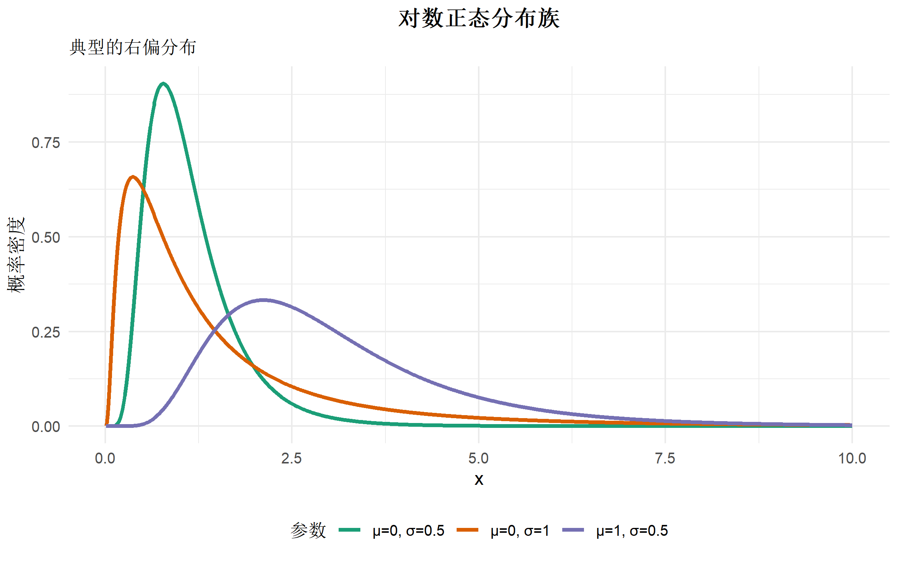
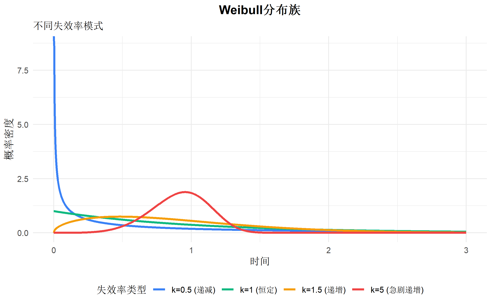
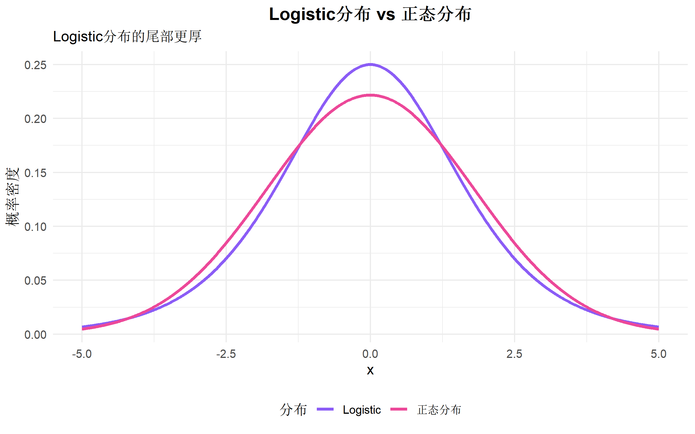
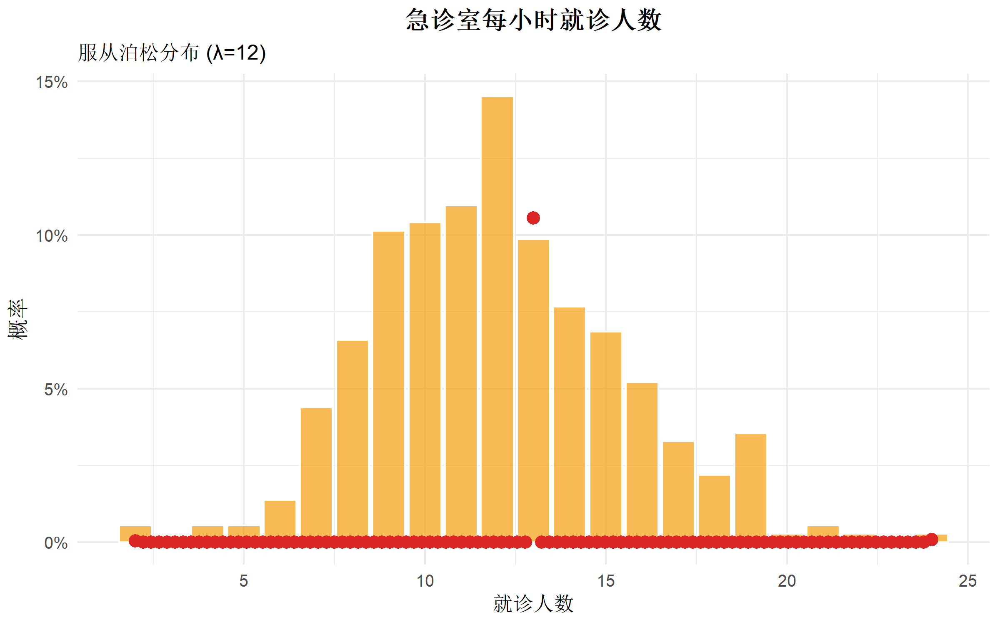
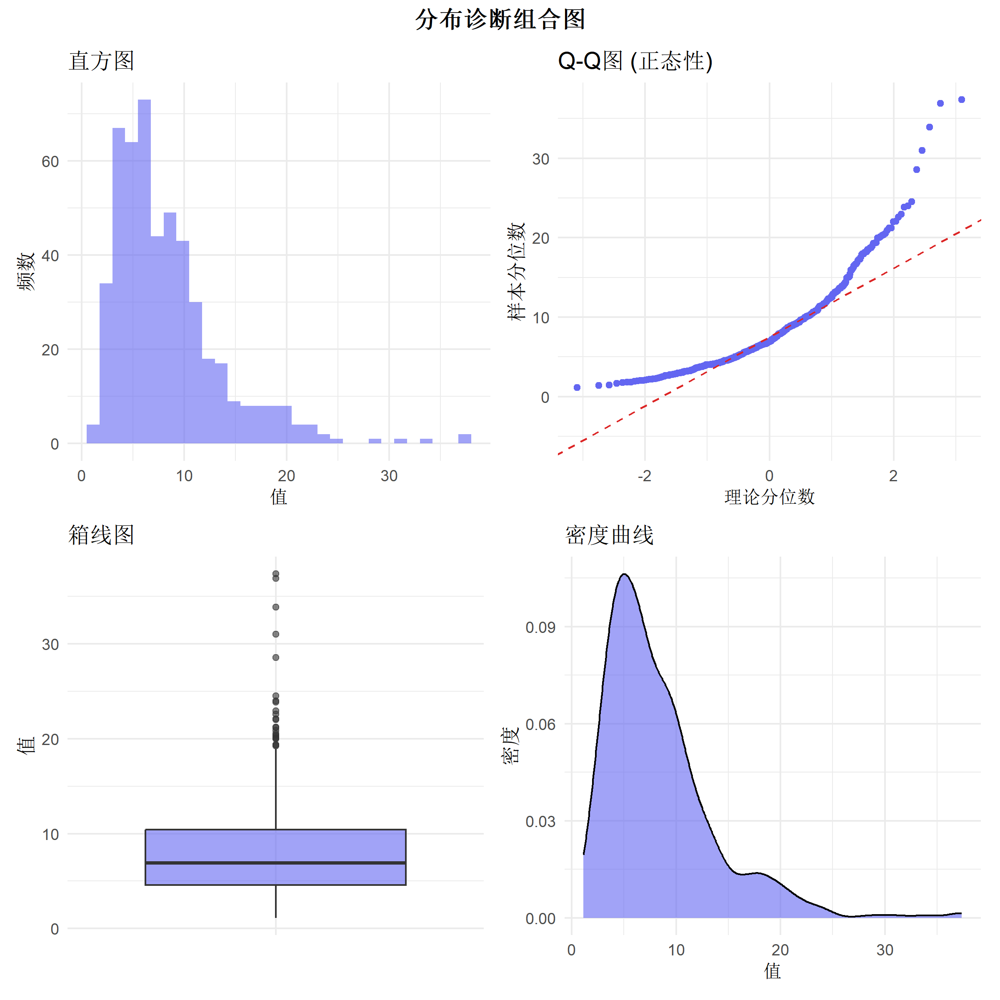
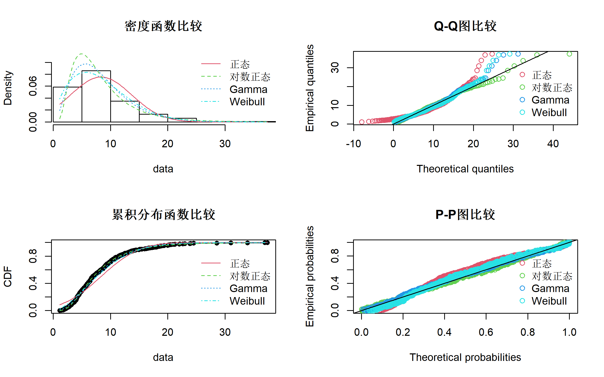

# 核心包
library(tidyverse) # 数据处理与可视化
library(MASS) # fitdistr() 拟合分布
library(fitdistrplus) # 高级分布拟合
library(moments) # 计算偏度和峰度
library(ggridges) # 山脊图
library(patchwork) # 图形组合
library(gtsummary) # 表格展示
library(scales) # 坐标轴格式化常见数据分布完全指南
统计分析方法
概率分布
统计基础
掌握正态、对数正态、Weibull、Logistic等常见分布的特性、应用与R实现
方法背景与适用场景
什么是概率分布?
想象你在观察一个班级学生的身高。有的人很高,有的人很矮,但大多数人的身高都集中在平均值附近。这种”数据如何分布”的规律,就是概率分布。
概率分布是描述随机变量取不同值的可能性的数学模型。理解分布对于: - 选择合适的统计检验方法 - 进行准确的数据建模 - 诊断模型假设是否满足 - 模拟和预测现实现象
分布类型概览
| 分布类型 | 适用场景 | 典型应用 |
|---|---|---|
| 正态分布 | 连续数据,对称分布 | 身高、体重、测量误差 |
| 对数正态分布 | 右偏数据,非负值 | 收入、药物浓度、住院天数 |
| Weibull分布 | 生存/可靠性分析 | 机器寿命、故障时间 |
| Logistic分布 | S型增长曲线 | 疾病传播、种群增长 |
| 指数分布 | 等待时间 | 排队时间、放射性衰变 |
| Gamma分布 | 等待时间之和 | 降雨量、保险理赔 |
| Beta分布 | 比例数据 | 成功率、百分比 |
| Poisson分布 | 计数数据 | 事件发生次数 |
| 二项分布 | 成功/失败试验 | 调查响应率 |
| 均匀分布 | 随机数生成 | 模拟实验 |
核心概念与模型入门
零基础通俗解释
正态分布:钟形曲线的秘密
想象你在靶场射击,大部分箭会落在靶心附近,离靶心越远的位置箭越少。这就是正态分布——数据围绕均值对称分布,呈现”中间多,两头少”的钟形。
对数正态分布:财富的分布
如果你统计所有人的收入,会发现大多数人收入不高,但少数富豪的收入极高,形成长长的右尾。将这些数据取对数后,就变成了对称的正态分布。这就是对数正态分布的本质。
Weibull分布:产品寿命的预言
灯泡刚开始用时很少坏,但用久了故障率会上升。Weibull分布可以描述这种”随时间变化的失效率”,广泛用于可靠性工程。
分布的四大特征
- 均值 (Mean): 数据的中心位置
- 方差/标准差 (Variance/SD): 数据的离散程度
- 偏度 (Skewness): 分布的对称性
- 偏度 = 0: 对称(如正态分布)
- 偏度 > 0: 右偏(如对数正态分布)
- 偏度 < 0: 左偏
- 峰度 (Kurtosis): 尾部厚度
- 峰度 = 3: 正态分布
- 峰度 > 3: 厚尾(极端值多)
- 峰度 < 3: 薄尾
R 包安装与加载
连续分布详解
1. 正态分布 (Normal Distribution)
理论基础
概率密度函数 (PDF): \[f(x) = \frac{1}{\sigma\sqrt{2\pi}} e^{-\frac{(x-\mu)^2}{2\sigma^2}}\]
- 参数: \(\mu\) (均值), \(\sigma\) (标准差)
- 记作: \(X \sim N(\mu, \sigma^2)\)
- 特点: 完全对称,68-95-99.7规则
# 生成正态分布数据
x <- seq(-4, 4, length.out = 1000)
df_normal <- tibble(
x = x,
`μ=0, σ=1` = dnorm(x, mean = 0, sd = 1),
`μ=0, σ=0.5` = dnorm(x, mean = 0, sd = 0.5),
`μ=0, σ=2` = dnorm(x, mean = 0, sd = 2),
`μ=-2, σ=1` = dnorm(x, mean = -2, sd = 1)
) |>
pivot_longer(-x, names_to = "参数", values_to = "密度")
# 可视化
ggplot(df_normal, aes(x = x, y = 密度, color = 参数)) +
geom_line(linewidth = 1.2) +
scale_color_brewer(palette = "Set1") +
labs(
title = "正态分布族",
subtitle = "不同参数下的概率密度函数",
x = "x", y = "概率密度"
) +
theme_minimal(base_size = 12) +
theme(
plot.title = element_text(hjust = 0.5, face = "bold"),
legend.position = "bottom"
)
实际应用:身高数据
# 模拟成年男性身高数据 (cm)
set.seed(42)
height_data <- tibble(
height = rnorm(1000, mean = 170, sd = 7)
)
# 检验正态性
shapiro.test(height_data$height) # p > 0.05 说明符合正态分布
Shapiro-Wilk normality test
data: height_data$height
W = 0.99882, p-value = 0.767# 拟合分布参数
fit_normal <- fitdistrplus::fitdist(height_data$height, "norm")
summary(fit_normal)Fitting of the distribution ' norm ' by maximum likelihood
Parameters :
estimate Std. Error
mean 169.819229 0.2218065
sd 7.014139 0.1568409
Loglikelihood: -3366.866 AIC: 6737.733 BIC: 6747.549
Correlation matrix:
mean sd
mean 1 0
sd 0 1# 可视化拟合效果
ggplot(height_data, aes(x = height)) +
geom_histogram(aes(y = after_stat(density)), bins = 30,
fill = "#4f46e5", alpha = 0.6, color = "white") +
stat_function(fun = dnorm,
args = list(mean = mean(height_data$height),
sd = sd(height_data$height)),
color = "#ef4444", linewidth = 1.2) +
labs(
title = "成年男性身高分布",
subtitle = "数据服从正态分布 N(170, 7²)",
x = "身高 (cm)", y = "密度"
) +
theme_minimal(base_size = 12) +
theme(plot.title = element_text(hjust = 0.5, face = "bold"))
2. 对数正态分布 (Log-Normal Distribution)
理论基础
如果 \(Y = \ln(X)\) 服从正态分布,则 \(X\) 服从对数正态分布。
PDF: \[f(x) = \frac{1}{x\sigma\sqrt{2\pi}} e^{-\frac{(\ln x - \mu)^2}{2\sigma^2}}, \quad x > 0\]
- 特点: 右偏,非负,无上界
- 适用: 收入、房价、住院时间
# 生成对数正态分布数据
x_pos <- seq(0.01, 10, length.out = 1000)
df_lognorm <- tibble(
x = x_pos,
`μ=0, σ=0.5` = dlnorm(x_pos, meanlog = 0, sdlog = 0.5),
`μ=0, σ=1` = dlnorm(x_pos, meanlog = 0, sdlog = 1),
`μ=1, σ=0.5` = dlnorm(x_pos, meanlog = 1, sdlog = 0.5)
) |>
pivot_longer(-x, names_to = "参数", values_to = "密度")
ggplot(df_lognorm, aes(x = x, y = 密度, color = 参数)) +
geom_line(linewidth = 1.2) +
scale_color_brewer(palette = "Dark2") +
labs(
title = "对数正态分布族",
subtitle = "典型的右偏分布",
x = "x", y = "概率密度"
) +
theme_minimal(base_size = 12) +
theme(
plot.title = element_text(hjust = 0.5, face = "bold"),
legend.position = "bottom"
)
实际应用:住院费用
# 模拟住院费用数据 (元)
cost_data <- tibble(
cost = rlnorm(500, meanlog = 9, sdlog = 0.8)
)
# 检查偏度
skewness(cost_data$cost) # > 0 说明右偏[1] 2.576472# 对数变换后检验正态性
shapiro.test(log(cost_data$cost))
Shapiro-Wilk normality test
data: log(cost_data$cost)
W = 0.99838, p-value = 0.9286# 拟合对数正态分布
fit_lognorm <- fitdist(cost_data$cost, "lnorm")
summary(fit_lognorm)Fitting of the distribution ' lnorm ' by maximum likelihood
Parameters :
estimate Std. Error
meanlog 8.9668268 0.03455739
sdlog 0.7727268 0.02443558
Loglikelihood: -5063.968 AIC: 10131.94 BIC: 10140.36
Correlation matrix:
meanlog sdlog
meanlog 1 0
sdlog 0 1# 可视化
ggplot(cost_data, aes(x = cost)) +
geom_histogram(aes(y = after_stat(density)), bins = 40,
fill = "#059669", alpha = 0.6, color = "white") +
stat_function(fun = dlnorm,
args = list(meanlog = fit_lognorm$estimate["meanlog"],
sdlog = fit_lognorm$estimate["sdlog"]),
color = "#dc2626", linewidth = 1.2) +
scale_x_continuous(labels = comma_format()) +
labs(
title = "住院费用分布",
subtitle = "典型的右偏对数正态分布",
x = "费用 (元)", y = "密度"
) +
theme_minimal(base_size = 12) +
theme(plot.title = element_text(hjust = 0.5, face = "bold"))
3. Weibull 分布
理论基础
PDF: \[f(x) = \frac{k}{\lambda}\left(\frac{x}{\lambda}\right)^{k-1}e^{-(x/\lambda)^k}, \quad x \geq 0\]
- 参数: \(k\) (形状参数), \(\lambda\) (尺度参数)
- 特点:
- \(k < 1\): 失效率递减(早期故障)
- \(k = 1\): 恒定失效率(指数分布)
- \(k > 1\): 失效率递增(磨损老化)
# 不同形状参数的Weibull分布
x_weib <- seq(0, 3, length.out = 1000)
df_weibull <- tibble(
x = x_weib,
`k=0.5 (递减)` = dweibull(x_weib, shape = 0.5, scale = 1),
`k=1 (恒定)` = dweibull(x_weib, shape = 1, scale = 1),
`k=1.5 (递增)` = dweibull(x_weib, shape = 1.5, scale = 1),
`k=5 (急剧递增)` = dweibull(x_weib, shape = 5, scale = 1)
) |>
pivot_longer(-x, names_to = "失效率类型", values_to = "密度")
ggplot(df_weibull, aes(x = x, y = 密度, color = 失效率类型)) +
geom_line(linewidth = 1.2) +
scale_color_manual(values = c("#3b82f6", "#10b981", "#f59e0b", "#ef4444")) +
labs(
title = "Weibull分布族",
subtitle = "不同失效率模式",
x = "时间", y = "概率密度"
) +
theme_minimal(base_size = 12) +
theme(
plot.title = element_text(hjust = 0.5, face = "bold"),
legend.position = "bottom"
)
实际应用:产品寿命
# 模拟LED灯泡寿命数据 (小时)
lifetime_data <- tibble(
lifetime = rweibull(300, shape = 2, scale = 10000)
)
# 拟合Weibull分布
fit_weibull <- fitdist(lifetime_data$lifetime, "weibull")
summary(fit_weibull)Fitting of the distribution ' weibull ' by maximum likelihood
Parameters :
estimate Std. Error
shape 2.010087 0.09070878
scale 10027.597786 306.32842687
Loglikelihood: -2941.068 AIC: 5886.136 BIC: 5893.544
Correlation matrix:
shape scale
shape 1.0000000 0.3181818
scale 0.3181818 1.0000000# 计算可靠性指标
shape_k <- fit_weibull$estimate["shape"]
scale_lambda <- fit_weibull$estimate["scale"]
# 平均寿命
mean_life <- scale_lambda * gamma(1 + 1/shape_k)
cat("平均寿命:", round(mean_life, 0), "小时\n")平均寿命: 8886 小时# 可靠性函数: P(T > t)
reliability <- function(t) {
pweibull(t, shape = shape_k, scale = scale_lambda, lower.tail = FALSE)
}
# 可视化可靠性曲线
t_seq <- seq(0, 20000, length.out = 100)
reliability_data <- tibble(
时间 = t_seq,
可靠性 = reliability(t_seq)
)
ggplot(reliability_data, aes(x = 时间, y = 可靠性)) +
geom_line(color = "#6366f1", linewidth = 1.5) +
geom_hline(yintercept = 0.5, linetype = "dashed", color = "gray50") +
scale_y_continuous(labels = percent_format()) +
scale_x_continuous(labels = comma_format()) +
labs(
title = "LED灯泡可靠性曲线",
subtitle = paste0("平均寿命: ", round(mean_life, 0), " 小时"),
x = "工作时间 (小时)", y = "可靠性 P(T > t)"
) +
theme_minimal(base_size = 12) +
theme(plot.title = element_text(hjust = 0.5, face = "bold"))
4. Logistic 分布
理论基础
PDF: \[f(x) = \frac{e^{-(x-\mu)/s}}{s(1 + e^{-(x-\mu)/s})^2}\]
- 参数: \(\mu\) (位置), \(s\) (尺度)
- 特点: 类似正态分布但尾部更厚,常用于logistic回归
# Logistic vs 正态分布
x_logis <- seq(-5, 5, length.out = 1000)
df_logis <- tibble(
x = x_logis,
`Logistic` = dlogis(x_logis, location = 0, scale = 1),
`正态分布` = dnorm(x_logis, mean = 0, sd = 1.8) # 调整SD使方差接近
)
df_logis_long <- df_logis |>
pivot_longer(-x, names_to = "分布", values_to = "密度")
ggplot(df_logis_long, aes(x = x, y = 密度, color = 分布)) +
geom_line(linewidth = 1.2) +
scale_color_manual(values = c("#8b5cf6", "#ec4899")) +
labs(
title = "Logistic分布 vs 正态分布",
subtitle = "Logistic分布的尾部更厚",
x = "x", y = "概率密度"
) +
theme_minimal(base_size = 12) +
theme(
plot.title = element_text(hjust = 0.5, face = "bold"),
legend.position = "bottom"
)
5. 指数分布 (Exponential Distribution)
特点: 无记忆性,失效率恒定
# 模拟客服呼叫等待时间 (分钟)
wait_data <- tibble(
wait_time = rexp(500, rate = 1/3) # 平均等待3分钟
)
ggplot(wait_data, aes(x = wait_time)) +
geom_histogram(aes(y = after_stat(density)), bins = 30,
fill = "#14b8a6", alpha = 0.6, color = "white") +
stat_function(fun = dexp, args = list(rate = 1/3),
color = "#dc2626", linewidth = 1.2) +
labs(
title = "客服呼叫等待时间",
subtitle = "服从指数分布 (平均3分钟)",
x = "等待时间 (分钟)", y = "密度"
) +
theme_minimal(base_size = 12) +
theme(plot.title = element_text(hjust = 0.5, face = "bold"))
6. Gamma 分布
特点: 指数分布的推广,可描述多个独立指数变量之和
# 模拟年降雨量 (mm)
rainfall_data <- tibble(
rainfall = rgamma(400, shape = 3, rate = 1/200)
)
fit_gamma <- fitdist(rainfall_data$rainfall, "gamma")
ggplot(rainfall_data, aes(x = rainfall)) +
geom_histogram(aes(y = after_stat(density)), bins = 30,
fill = "#2563eb", alpha = 0.6, color = "white") +
stat_function(fun = dgamma,
args = list(shape = fit_gamma$estimate["shape"],
rate = fit_gamma$estimate["rate"]),
color = "#dc2626", linewidth = 1.2) +
labs(
title = "年降雨量分布",
subtitle = "服从Gamma分布",
x = "降雨量 (mm)", y = "密度"
) +
theme_minimal(base_size = 12) +
theme(plot.title = element_text(hjust = 0.5, face = "bold"))
7. Beta 分布
特点: 取值范围 [0,1],适合描述比例数据
# 不同参数的Beta分布
x_beta <- seq(0, 1, length.out = 1000)
df_beta <- tibble(
x = x_beta,
`α=β=0.5 (U型)` = dbeta(x_beta, 0.5, 0.5),
`α=β=1 (均匀)` = dbeta(x_beta, 1, 1),
`α=β=2 (单峰)` = dbeta(x_beta, 2, 2),
`α=2, β=5 (左偏)` = dbeta(x_beta, 2, 5),
`α=5, β=2 (右偏)` = dbeta(x_beta, 5, 2)
) |>
pivot_longer(-x, names_to = "参数", values_to = "密度")
ggplot(df_beta, aes(x = x, y = 密度, color = 参数)) +
geom_line(linewidth = 1) +
scale_color_brewer(palette = "Set2") +
labs(
title = "Beta分布族",
subtitle = "灵活的 [0,1] 区间分布",
x = "x", y = "概率密度"
) +
theme_minimal(base_size = 12) +
theme(
plot.title = element_text(hjust = 0.5, face = "bold"),
legend.position = "bottom"
)
离散分布详解
8. 泊松分布 (Poisson Distribution)
适用: 单位时间/空间内事件发生次数
# 模拟急诊室每小时就诊人数
er_visits <- tibble(
visits = rpois(365, lambda = 12)
)
# PMF可视化
visits_freq <- er_visits |>
count(visits) |>
mutate(prob = n / sum(n))
ggplot(visits_freq, aes(x = visits, y = prob)) +
geom_col(fill = "#f59e0b", alpha = 0.7, color = "white") +
stat_function(fun = dpois, args = list(lambda = 12),
geom = "point", color = "#dc2626", size = 3) +
scale_y_continuous(labels = percent_format()) +
labs(
title = "急诊室每小时就诊人数",
subtitle = "服从泊松分布 (λ=12)",
x = "就诊人数", y = "概率"
) +
theme_minimal(base_size = 12) +
theme(plot.title = element_text(hjust = 0.5, face = "bold"))
9. 二项分布 (Binomial Distribution)
适用: n次独立试验中成功次数
# 模拟20次抛硬币实验 (每次10次)
coin_flips <- tibble(
heads = rbinom(1000, size = 10, prob = 0.5)
)
flip_freq <- coin_flips |>
count(heads) |>
mutate(prob = n / sum(n))
ggplot(flip_freq, aes(x = heads, y = prob)) +
geom_col(fill = "#3b82f6", alpha = 0.7, color = "white") +
stat_function(fun = dbinom, args = list(size = 10, prob = 0.5),
geom = "point", color = "#dc2626", size = 3) +
scale_y_continuous(labels = percent_format()) +
labs(
title = "10次抛硬币正面次数",
subtitle = "服从二项分布 B(10, 0.5)",
x = "正面次数", y = "概率"
) +
theme_minimal(base_size = 12) +
theme(plot.title = element_text(hjust = 0.5, face = "bold"))
分布识别与选择
步骤1: 数据类型判断
# 创建决策树辅助函数
distribution_selector <- function(data_type, range, symmetry, tail) {
if (data_type == "连续") {
if (range == "全实数") {
if (symmetry == "对称") return("正态分布")
if (tail == "厚尾") return("Logistic分布")
}
if (range == "非负") {
if (symmetry == "右偏") return("对数正态分布 或 Gamma分布")
if (data_type == "寿命") return("Weibull分布")
}
if (range == "[0,1]") return("Beta分布")
}
if (data_type == "离散") {
if (range == "计数") return("泊松分布")
if (range == "成功次数") return("二项分布")
}
return("需进一步分析")
}步骤2: 图形诊断
# 以对数正态分布数据为例
test_data <- tibble(
value = rlnorm(500, meanlog = 2, sdlog = 0.6)
)
# 多种诊断图
p1 <- ggplot(test_data, aes(x = value)) +
geom_histogram(bins = 30, fill = "#6366f1", alpha = 0.6) +
labs(title = "直方图", x = "值", y = "频数") +
theme_minimal()
p2 <- ggplot(test_data, aes(sample = value)) +
stat_qq(color = "#6366f1") +
stat_qq_line(color = "#dc2626", linetype = "dashed") +
labs(title = "Q-Q图 (正态性)", x = "理论分位数", y = "样本分位数") +
theme_minimal()
p3 <- ggplot(test_data, aes(x = "", y = value)) +
geom_boxplot(fill = "#6366f1", alpha = 0.6) +
labs(title = "箱线图", x = "", y = "值") +
theme_minimal()
p4 <- ggplot(test_data, aes(x = value)) +
geom_density(fill = "#6366f1", alpha = 0.6) +
labs(title = "密度曲线", x = "值", y = "密度") +
theme_minimal()
(p1 | p2) / (p3 | p4) +
plot_annotation(
title = "分布诊断组合图",
theme = theme(plot.title = element_text(hjust = 0.5, face = "bold", size = 14))
)
步骤3: 统计检验
# 正态性检验
shapiro_result <- shapiro.test(test_data$value)
cat("Shapiro-Wilk检验 p值:", shapiro_result$p.value, "\n")Shapiro-Wilk检验 p值: 6.495751e-21 # 偏度与峰度
cat("偏度:", skewness(test_data$value), "\n")偏度: 1.806801 cat("峰度:", kurtosis(test_data$value), "\n")峰度: 7.962393 # 对数变换后再检验
shapiro_log <- shapiro.test(log(test_data$value))
cat("\n对数变换后 Shapiro-Wilk p值:", shapiro_log$p.value, "\n")
对数变换后 Shapiro-Wilk p值: 0.9266862 cat("→ 数据服从对数正态分布\n")→ 数据服从对数正态分布分布拟合与参数估计
高级拟合工具: fitdistrplus
# 拟合多种分布并比较
fit_norm <- fitdist(test_data$value, "norm")
fit_lnorm <- fitdist(test_data$value, "lnorm")
fit_gamma <- fitdist(test_data$value, "gamma")
fit_weibull <- fitdist(test_data$value, "weibull")
# AIC比较 (越小越好)
aic_table <- tibble(
分布 = c("正态", "对数正态", "Gamma", "Weibull"),
AIC = c(
fit_norm$aic,
fit_lnorm$aic,
fit_gamma$aic,
fit_weibull$aic
),
BIC = c(
fit_norm$bic,
fit_lnorm$bic,
fit_gamma$bic,
fit_weibull$bic
)
) |>
arrange(AIC)
print(aic_table)# A tibble: 4 × 3
分布 AIC BIC
<chr> <dbl> <dbl>
1 对数正态 2851. 2859.
2 Gamma 2874. 2883.
3 Weibull 2921. 2929.
4 正态 3089. 3098.# 可视化比较
par(mfrow = c(2, 2))
plot.legend <- c("正态", "对数正态", "Gamma", "Weibull")
denscomp(list(fit_norm, fit_lnorm, fit_gamma, fit_weibull),
legendtext = plot.legend, main = "密度函数比较")
qqcomp(list(fit_norm, fit_lnorm, fit_gamma, fit_weibull),
legendtext = plot.legend, main = "Q-Q图比较")
cdfcomp(list(fit_norm, fit_lnorm, fit_gamma, fit_weibull),
legendtext = plot.legend, main = "累积分布函数比较")
ppcomp(list(fit_norm, fit_lnorm, fit_gamma, fit_weibull),
legendtext = plot.legend, main = "P-P图比较")
实战案例:综合应用
案例:医院住院时间分析
# 模拟住院时间数据 (天)
hospital_data <- tibble(
patient_id = 1:400,
age = sample(20:80, 400, replace = TRUE),
condition = sample(c("轻症", "中症", "重症"), 400,
replace = TRUE, prob = c(0.5, 0.3, 0.2)),
los = case_when(
condition == "轻症" ~ rgamma(400, shape = 2, rate = 0.5),
condition == "中症" ~ rgamma(400, shape = 3, rate = 0.3),
condition == "重症" ~ rgamma(400, shape = 4, rate = 0.2)
)
)
# 按病情分组可视化
ggplot(hospital_data, aes(x = los, y = condition, fill = condition)) +
geom_density_ridges(alpha = 0.7, scale = 0.9) +
scale_fill_brewer(palette = "Set2") +
scale_x_continuous(limits = c(0, 30)) +
labs(
title = "不同病情患者住院时间分布",
subtitle = "右偏Gamma分布特征明显",
x = "住院时间 (天)", y = "病情",
fill = "病情"
) +
theme_minimal(base_size = 12) +
theme(
plot.title = element_text(hjust = 0.5, face = "bold"),
legend.position = "none"
)
# 分组拟合分布
fit_results <- hospital_data |>
group_by(condition) |>
summarise(
平均住院天数 = mean(los),
中位数 = median(los),
标准差 = sd(los),
偏度 = skewness(los),
.groups = "drop"
)
print(fit_results)# A tibble: 3 × 5
condition 平均住院天数 中位数 标准差 偏度
<chr> <dbl> <dbl> <dbl> <dbl>
1 中症 9.71 8.77 5.68 0.909
2 轻症 4.22 3.65 2.88 1.20
3 重症 19.3 17.6 9.61 0.924模型假设与前提条件
关键假设
- 独立性: 观测值相互独立
- 同分布: 数据来自同一分布
- 参数稳定性: 参数不随时间/空间变化
检验方法
# 同分布检验 (Kolmogorov-Smirnov)
# 比较两组数据是否来自同一分布
group1 <- rlnorm(100, 2, 0.6)
group2 <- rlnorm(100, 2, 0.6)
ks_result <- ks.test(group1, group2)
cat("KS检验 p值:", ks_result$p.value, "\n")KS检验 p值: 0.6993742 cat("解读: p >0.05 说明两组数据可能来自同一分布\n")解读: p >0.05 说明两组数据可能来自同一分布常见错误与纠偏
错误1: 强行假设正态分布
问题: 不检验就假设数据正态分布
后果: 统计检验失效,结论错误
解决:
# 始终先检验
shapiro.test(data)
# 或用可视化判断
qqnorm(data); qqline(data)错误2: 忽略异常值影响
# 对数正态分布对异常值敏感
data_with_outlier <- c(test_data$value, 1000) # 添加极端值
fit_original <- fitdist(test_data$value, "lnorm")
fit_outlier <- fitdist(data_with_outlier, "lnorm")
cat("原始数据 meanlog:", round(fit_original$estimate["meanlog"], 2), "\n")原始数据 meanlog: 1.95 cat("含异常值 meanlog:", round(fit_outlier$estimate["meanlog"], 2), "\n")含异常值 meanlog: 1.96 错误3: 混淆分布类型
| 易混淆对 | 区分方法 |
|---|---|
| 对数正态 vs Gamma | Q-Q图:对数正态取log后呈直线 |
| 泊松 vs 负二项 | 方差/均值比:泊松≈1,负二项>1 |
| 正态 vs Logistic | 尾部:Logistic更厚 |
错误4: 样本量过小
# 小样本拟合不稳定
small_sample <- rlnorm(20, 2, 0.6)
fit_small <- fitdist(small_sample, "lnorm")
# 参数估计置信区间很宽
confint(fit_small) 2.5 % 97.5 %
meanlog 1.9125581 2.417221
sdlog 0.3973331 0.754179错误5: 忽略截断/删失数据
问题: 医学数据常有检测下限/随访截止
解决: 使用专门方法
# 左截断数据拟合
library(fitdistrplus)
fitdistcens(censored_data, "lnorm")进阶扩展
1. 混合分布模型
# 双峰混合正态分布
mixed_data <- c(
rnorm(300, mean = 10, sd = 2),
rnorm(200, mean = 20, sd = 3)
)
ggplot(tibble(x = mixed_data), aes(x = x)) +
geom_histogram(aes(y = after_stat(density)), bins = 40,
fill = "#8b5cf6", alpha = 0.6) +
geom_density(color = "#dc2626", linewidth = 1.2) +
labs(
title = "混合分布示例",
subtitle = "两个正态分布的叠加",
x = "值", y = "密度"
) +
theme_minimal(base_size = 12) +
theme(plot.title = element_text(hjust = 0.5, face = "bold"))
2. 分布变换技术
# Box-Cox变换寻找最优λ
library(MASS)
bc <- boxcox(lm(test_data$value ~ 1), plotit = FALSE)
lambda_optimal <- bc$x[which.max(bc$y)]
cat("最优λ:", round(lambda_optimal, 2), "\n")最优λ: 0 # 变换后的数据
if (lambda_optimal == 0) {
transformed <- log(test_data$value)
} else {
transformed <- (test_data$value^lambda_optimal - 1) / lambda_optimal
}
shapiro.test(transformed)
Shapiro-Wilk normality test
data: transformed
W = 0.99837, p-value = 0.92673. 截断分布
# 截断正态分布 (只保留>0的部分)
library(truncnorm)
truncated_data <- rtruncnorm(500, a = 0, b = Inf, mean = 2, sd = 3)
ggplot(tibble(x = truncated_data), aes(x = x)) +
geom_histogram(aes(y = after_stat(density)), bins = 30,
fill = "#14b8a6", alpha = 0.6) +
stat_function(fun = dtruncnorm,
args = list(a = 0, mean = 2, sd = 3),
color = "#dc2626", linewidth = 1.2) +
labs(
title = "截断正态分布",
subtitle = "仅保留正值部分",
x = "值", y = "密度"
) +
theme_minimal(base_size = 12) +
theme(plot.title = element_text(hjust = 0.5, face = "bold"))
结果解读与报告
报告模板
我们使用Shapiro-Wilk检验评估数据的正态性 (W = 0.XX, p < 0.05),结果显示数据显著偏离正态分布。进一步检查发现偏度为X.XX (>0表示右偏),提示对数正态分布可能更合适。通过AIC比较 (对数正态:XXX vs 正态:XXX),确认对数正态分布拟合更优。拟合参数为 meanlog = X.XX (95% CI: X.XX-X.XX), sdlog = X.XX (95% CI: X.XX-X.XX)。
可视化报告
# 创建诊断报告图
summary_data <- hospital_data |>
filter(condition == "中症")
fit_final <- fitdist(summary_data$los, "gamma")
p_hist <- ggplot(summary_data, aes(x = los)) +
geom_histogram(aes(y = after_stat(density)), bins = 20,
fill = "#3b82f6", alpha = 0.6, color = "white") +
stat_function(fun = dgamma,
args = list(shape = fit_final$estimate["shape"],
rate = fit_final$estimate["rate"]),
color = "#dc2626", linewidth = 1.2) +
labs(title = "A. 密度拟合", x = "住院时间", y = "密度") +
theme_minimal()
p_qq <- ggplot(summary_data, aes(sample = los)) +
stat_qq(distribution = qgamma,
dparams = list(shape = fit_final$estimate["shape"],
rate = fit_final$estimate["rate"]),
color = "#3b82f6") +
stat_qq_line(distribution = qgamma,
dparams = list(shape = fit_final$estimate["shape"],
rate = fit_final$estimate["rate"]),
color = "#dc2626", linetype = "dashed") +
labs(title = "B. Q-Q图", x = "理论分位数", y = "样本分位数") +
theme_minimal()
p_ecdf <- ggplot(summary_data, aes(x = los)) +
stat_ecdf(color = "#3b82f6", linewidth = 1) +
stat_function(fun = pgamma,
args = list(shape = fit_final$estimate["shape"],
rate = fit_final$estimate["rate"]),
color = "#dc2626", linewidth = 1, linetype = "dashed") +
labs(title = "C. 累积分布函数", x = "住院时间", y = "累积概率") +
theme_minimal()
(p_hist | p_qq) / p_ecdf +
plot_annotation(
title = "中症患者住院时间 Gamma 分布拟合诊断",
subtitle = paste0("Shape = ", round(fit_final$estimate["shape"], 2),
", Rate = ", round(fit_final$estimate["rate"], 3)),
theme = theme(
plot.title = element_text(hjust = 0.5, face = "bold", size = 14),
plot.subtitle = element_text(hjust = 0.5, size = 11)
)
)
总结
分布选择决策树
数据类型?
├── 连续
│ ├── 取值范围?
│ │ ├── 全实数 → 正态/Logistic分布
│ │ ├── 非负 → 对数正态/Gamma/Weibull
│ │ └── [0,1] → Beta分布
│ └── 对称性?
│ ├── 对称 → 正态分布
│ └── 右偏 → 对数正态/Gamma
└── 离散
├── 计数数据 → 泊松/负二项分布
└── 成功次数 → 二项分布核心R函数速查
| 功能 | 函数 | 示例 |
|---|---|---|
| 密度函数 | dnorm, dlnorm, dweibull |
dnorm(x, mean=0, sd=1) |
| 分布函数 | pnorm, plnorm, pweibull |
pnorm(1.96) |
| 分位数 | qnorm, qlnorm, qweibull |
qnorm(0.975) |
| 随机数 | rnorm, rlnorm, rweibull |
rnorm(100) |
| 拟合分布 | fitdistrplus::fitdist() |
fitdist(data, "norm") |
| 正态性检验 | shapiro.test() |
shapiro.test(data) |
| 比较拟合 | fitdistrplus::gofstat() |
gofstat(list(fit1, fit2)) |
Checklist
参考文献
- Johnson NL, Kotz S, Balakrishnan N. Continuous Univariate Distributions (2nd ed.). Wiley.
- Delignette-Muller ML, Dutang C. (2015). fitdistrplus: An R Package for Fitting Distributions. Journal of Statistical Software.
- Venables WN, Ripley BD. Modern Applied Statistics with S (4th ed.). Springer.
- Wickham H. ggplot2: Elegant Graphics for Data Analysis. Springer.
- NIST Engineering Statistics Handbook